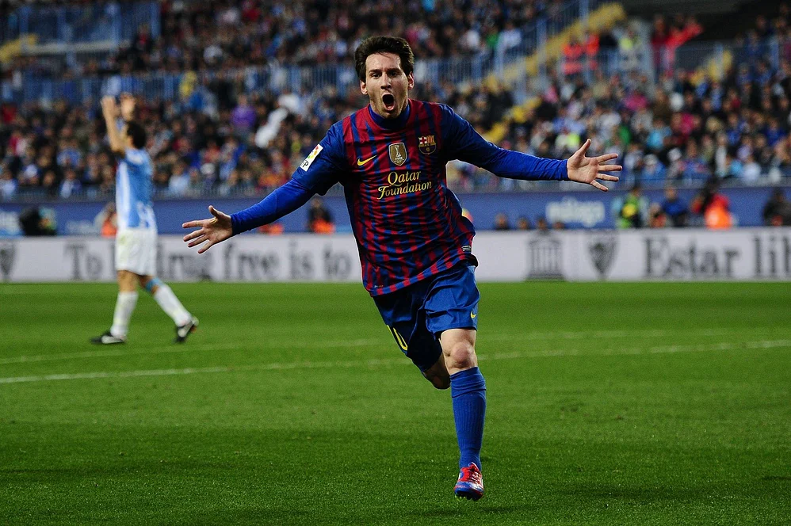

আপডেট: ২৬ আগস্ট ২০২৩, ১৭: ৫৮


মেসি ও রোনালদো এখন আলাদা মহাদেশে খেললেও দুজনকে নিয়ে শ্রেষ্ঠত্বের বিতর্ক চলছেই। ছবি : এএফপি
লিওনেল মেসি ও ক্রিস্টিয়ানো রোনালদোর ফুটবলীয় দ্বৈরথের সময়টা প্রায় দুই দশক। অভিষেকের পর থেকে একে অপরকে দলীয় ও ব্যক্তিগত অর্জনে টেক্কা দিয়েছেন, যেখানে আলাদাভাবে শ্রেষ্ঠত্বের চূড়া ছুঁয়েছেন দুজনই।
ব্যক্তিগত মাইলফলকের টালিখাতায়ও কোথাও মেসির শ্রেষ্ঠত্ব, আবার কোথাও মেসিকে পেছনে ফেলেছেন রোনালদো। ক্যারিয়ারে সবচেয়ে বেশি হ্যাটট্রিকের তালিকায় যেমন দাপট দেখাচ্ছেন রোনালদো।
সর্বশেষ গত রাতে সৌদি প্রো লিগের ম্যাচে আল ফাতেহর বিপক্ষে আরেকটি হ্যাটট্রিক করেছেন রোনালদো, যা তাঁর হ্যাটট্রিক সংখ্যাকে ৬৩–তে উন্নীত করেছে। অন্য দিকে ক্লাবের হয়ে ৩ বছর আগে সর্বশেষ হ্যাটট্রিক পাওয়ার কারণে এ লড়াইয়ে পিছিয়ে পড়েছেন মেসি। তাঁর হ্যাটট্রিক সংখ্যা এখন ৫৭।
তবে সব মিলিয়ে দুজনের কেউ শীর্ষে নন। গিনেস ওয়ার্ল্ড রেকর্ডস অনুযায়ী ৯২ হ্যাটট্রিক নিয়ে সবার ওপরে আছেন ফুটবলের ‘রাজা’ পেলে। আর রেকর্ড স্পোর্টস সকার স্ট্যাটিস্টিক ফাউন্ডেশন (আরএসএসএসএফ) বলছে, অন্তত ১১৪ হ্যাটট্রিক নিয়ে সবার শীর্ষে জার্মান ফুটবলার এরউইন হেলশেন।

গিনেস ওয়ার্ল্ড রেকর্ডস অনুযায়ী সবচেয়ে বেশি হ্যাটট্রিক করেছেন ফুটবলের রাজা পেলে । ছবি : টুইটার
ক্যারিয়ারের শুরুতে মেসির হ্যাটট্রিক কিন্তু রোনালদোর আগে। ২০০৭ সালে প্রথম হ্যাটট্রিক পান মেসি, যেটি তিনি পেয়েছিলেন ‘এল ক্লাসিকো’তে রিয়াল মাদ্রিদের বিপক্ষে। এর পর থেকে ২০০৮ সাল বাদে প্রতিবছর ন্যূনতম একটি হ্যাটট্রিক পেয়েছেন আর্জেন্টাইন মহাতারকা।
তবে ২০২০ সালের পর থেকে তাঁর হ্যাটট্রিকে ভাটা পড়েছে। গত প্রায় ৪ বছরে মেসি বছরপ্রতি হ্যাটট্রিক করেছেন একটি। তবে বার্সা ছাড়ার পর আর হ্যাটট্রিক পাননি। পিএসজির দুই বছরেও হ্যাটট্রিক–খরা গেছে মেসির। এমনকি ২০২০-২১ মৌসুম থেকে ক্লাবের হয়ে আর কোনো হ্যাটট্রিক নেই তাঁর, যেখানে এ সময় রোনালদোর হ্যাটট্রিকসংখ্যা ৯।
মেসির ক্যারিয়ারে হ্যাটট্রিকের বছর ছিল ২০১২ সাল। সে বছর ‘এলএমটেন’ সব মিলিয়ে ৯টি হ্যাটট্রিক পেয়েছেন। ২০১০, ২০১১ ও ২০১৬ সালে পেয়েছে ৬টি করে হ্যাটট্রিক। আর সব মিলিয়ে ৫৭ হ্যাটট্রিকের ৪৮টিই মেসি পেয়েছেন ক্লাবের হয়ে। ৯টি পেয়েছেন জাতীয় দলের জার্সিতে।
মেসির ক্যারিয়ারে হ্যাটট্রিকের বছর ছিল ২০১২ সাল । ছবি : টুইটার
রোনালদো তাঁর ক্যারিয়ারে প্রথম হ্যাটট্রিক পান ২০০৮ সালে। কিন্তু ২০০৯ সাল পর্যন্ত সেই একটি হ্যাটট্রিকই ছিল রোনালদোর সম্বল। তবে ফিরে তাকাতে হয়নি ২০১০ সাল থেকে। সে বছর পেয়েছেন ৪ হ্যাটট্রিক। এর পর থেকে প্রতিবছর হ্যাটট্রিক পেয়েছেন ‘সিআর সেভেন’। সবচেয়ে বেশি ৯ হ্যাটট্রিক পেয়েছেন ২০১১ সালে। এক বছরে সেটিই সর্বোচ্চ। ২০১৩ ও ২০১৫ সালে রোনালদো হ্যাটট্রিক পেয়েছেন ৮টি করে। এমনকি চলতি বছর এরই মধ্যে ৩টি হ্যাটট্র্রিক পেয়েছেন পর্তুগিজ মহাতারকা। আর সব মিলিয়ে ৬৩ হ্যাটট্রিকের ৫৩টি রোনালদো পেয়েছেন ক্লাবের হয়ে। বাকি ১০ হ্যাটট্রিক করেছেন জাতীয় দলের জার্সিতে।
ম্যাচপ্রতি হ্যাটট্রিকে অবশ্য রোনালদোর চেয়ে মেসিই এগিয়ে আছেন। প্রতি ১৮.২ ম্যাচে একটি করে হ্যাটট্রিক করেছেন ইন্টার মায়ামি তারকা। আর রোনালদো প্রতি ১৮.৭ ম্যাচে করেছেন একটি করে হ্যাট্রটিক। ইউরোপীয় প্রতিযোগিতায়ও হ্যাটট্রিকসংখ্যায় লড়াই আছে এই দুজনের। তবে এ লড়াইয়ে সমতায় আছেন তাঁরা। দুজনই পেয়েছেন ৮টি করে হ্যাটট্রিক। তবে হ্যাটট্রিকের সঙ্গে বাড়তি গোল হিসাব করলে মেসি ৪ গোল পেয়েছেন ৬ ম্যাচে। আর ৫ গোল পেয়েছেন ২ ম্যাচে। অন্য দিকে রোনালদো ৪ গোল পেয়েছেন ৯ ম্যাচে। মেসির মতো রোনালদোও ২ ম্যাচে ৫ গোল করেও পেয়েছেন।
গত রাতে ক্যারিয়ারের ৬৩তম হ্যাটট্রিক করেছেন রোনালদো । ছবি : টুইটার
রোনালদোর ৬৩ হ্যাটট্রিকের ৩০টিতে অবশ্য পেনাল্টি যুক্ত ছিল। অর্থাৎ রোনালদোর ৪৭.৬ শতাংশ হ্যাটট্রিকের সঙ্গে যুক্ত ছিল পেনাল্টিও। অন্য দিকে মেসির ৫৭ হ্যাটট্রিকের ১২টির সঙ্গে পেনাল্টি সম্পৃক্ত আছে, যা ২১.১ শতাংশ।
রোনালদোর ৯টি হ্যাটট্রিক ছিল ‘পারফেক্ট’ হ্যাটট্রিক। অর্থাৎ তিন গোলের একটি ডান পায়ে, একটি বাঁ পায়ে এবং অন্যটি এসেছে হেড থেকে। হেডে দুর্বল মেসির অবশ্য কোনো পারফেক্ট হ্যাটট্রিক নেই। তবে দুর্বল পায়ে তিন গোল করে হ্যাটট্রিক করার কৃতিত্ব আছে মেসি। ২০১৪ সালের চ্যাম্পিয়নস লিগে তিনি এই কীর্তি গড়েছিলেন।
ঘরের মাঠে ও প্রতিপক্ষের মাঠে হ্যাটট্রিক করার ক্ষেত্রেও প্রায় কাছাকাছি অবস্থানে আছেন দুজন। মেসির ৬৩.২ শতাংশ (৩৬টি) হ্যাটট্রিক এসেছে ঘরের মাঠে, যেখানে ঘরের বাইরে হয় ৩৩.৩ শতাংশ (১৯টি)। দুটি এসেছে নিরপেক্ষ ভেন্যুতে। রোনালদো ঘরে হ্যাটট্রিক পেয়েছেন ৬৩.৫ শতাংশ (৪০) এবং বাইরে তাঁর হ্যাটট্রিক ৩৩.৩ শতাংশ (২১)। নিরপেক্ষ ভেন্যুতে রোনালদো ১টি হ্যাটট্রিক পেয়েছেন।
Location:Prothom Alo | 9R6H+82H, Hill View Rd, Chattogram